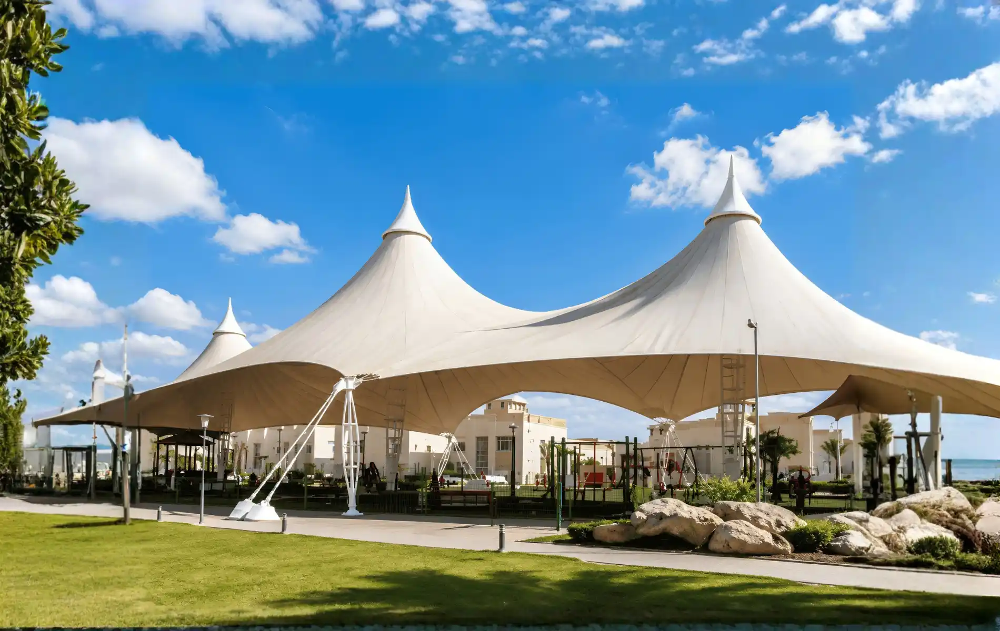

ETFE, or Ethylene tetrafluoroethylene, is an exciting addition to the selection of membrane materials Enclos Tensile Structures offers. It is a highly transparent extruded film applied either as a single layer membrane or as a multilayer pneumatically inflated cushion. The material has good UV stability, as well as chemical and heat resistance. At just 1% the weight of glass, the material is revolutionizing the construction industry – allowing us to create structures previously unimaginable.
Single Layered ETFE Structures (mechanically pre-stressed) ETFE can be applied as a single layered membrane and tensioned with either wire cables, lightweight steel, or aluminum to maintain shape and stability.
Multilayered ETFE Structures (pneumatically pre-stressed) In two or more layers, a pneumatic cushion is created that is then attached using aluminum extrusions and supported by a lightweight structure. These cushions are filled with low-pressure air, providing thermal insulation and structural stability against wind or snow loads. If needed, small cables can be used for additional tensioning and support. Under typical loading conditions, ETFE cushions can range from 5 to 15 feet wide and reach up to 200 feet in length.
Get a free PVC membrane consultation with the most experienced designers and engineers in the industry.
Contact Us| Type | Layers | Purpose | Layer Details | Benefits | Usage |
|---|---|---|---|---|---|
| Single Layer ETFE | One single ETFE film | Basic weatherproofing and light transmission. | A single ETFE sheet fixed to a lightweight steel or aluminum structure. | Economical, allows maximum light transmission, UV-resistant, and recyclable. | Used in greenhouses, atriums, or areas where insulation is not required. |
| Double Layer ETFE | Two ETFE films with air cushions | Provides improved thermal insulation. | Two layers form an inflated cushion using low-pressure air, supported by cables or aluminum extrusions. | Better thermal insulation, lightweight, and cost-effective compared to glass. | Roofing systems for public spaces, canopies, and semi-insulated structures. |
| Triple Layer ETFE | Three ETFE films with air cushions | Maximum thermal and acoustic insulation. | Three layers form a multilayered cushion system inflated with controlled air pressure. | Superior thermal performance, acoustic dampening, and structural stability. | Ideal for high-performance roofing applications in stadiums, transport hubs, and commercial spaces requiring enhanced insulation and strength. |
| Feature | Single Layer ETFE Foil | Double Layer ETFE Foil | Triple Layer ETFE Foil |
|---|---|---|---|
| Number of Layers | 1 | 2 | 3 |
| Reason for Layering | Lightweight, basic coverage. | Provides thermal insulation and strength. | Enhances insulation, reduces condensation. |
| Layer Composition | Single ETFE foil stretched on frame. | Two ETFE foils with air gap (cushion). | Three ETFE foils with controlled air gaps. |
| Benefits of Layers | Cost-effective, easy installation. | Improves thermal insulation, soundproofing. | Excellent insulation, superior durability. |
| Usage | Temporary structures, small installations. | Medium-scale roofing, walkways. | Stadiums, large-scale architectural projects. |
| Coatings | Anti-UV and anti-scratch. | Anti-UV, anti-condensation, anti-scratch. | Anti-UV, anti-scratch, self-cleaning layer. |
| Coating Details | Thin protective film. | Enhanced coating for longevity. | Advanced coatings for high performance. |
| Durability | 10–15 years. | 15–20 years. | 20–30 years. |
| Translucency | 95–97% light transmission. | 80–90% (due to air gap). | 70–85% (depends on layer thickness). |
| Tensile Strength | 40–50 MPa. | 40–50 MPa. per layer. | 40–50 MPa per layer. |
| UV Resistance Ratio | 99% protection. | 99% protection. | 99% protection. |
| U.V. Protection Ratio | High (blocks harmful UV rays). | High | High |
| Self-Cleaning Properties | Yes, dirt slides off with rain. | Yes | Yes |
| Waterproofing | Fully waterproof. | Fully waterproof. | Fully waterproof. |
| Applications | Greenhouses, atriums, lightweight canopies. | Walkways, façades, moderate weather areas. | Stadiums, airports, extreme weather areas. |
| Thickness Range | 100–300 microns. | 200–400 microns. | 300–600 microns. |
| Weight | 0.15–0.35 kg/m². | 0.3–0.6 kg/m². | 0.45–0.9 kg/m². |
| Structural Requirements | Minimal support. | Requires moderate structural support. | Requires advanced structural support. |
| Aesthetic Appeal | Transparent and modern. | Soft diffused lighting. | Highly architectural and premium look. |
| Sustainability | Fully recyclable, low energy production. | Fully recyclable. | Fully recyclable. |
| Warranty | 10 years. | 10–15 years. | 15–20 years. |

Contact us today to bring your vision to life. As a trusted leader in the design, engineering, manufacturing, and installation of high-quality tensile fabric structures, we offer customized solutions for a diverse range of applications and industries. With extensive project experience and a commitment to excellence, we provide endless possibilities for bespoke design concepts tailored to your unique requirements.
Contact Us